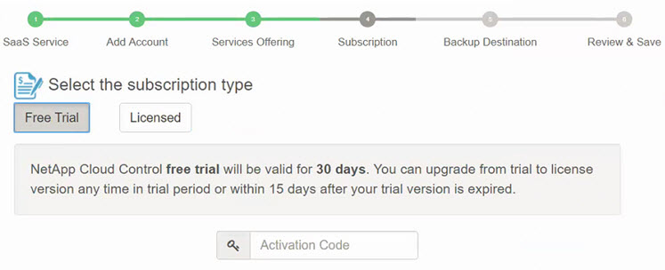

What’s new in NetApp SaaS Backup (formerly "NetApp Cloud Control") for Office 365 Edit on GitHub Request doc changes
New features and updates
The following new features and updates have been added to this release of NetApp SaaS Backup for Office 365
August 2018
-
The user interface has been redesigned for improved user experience and efficiency.
-
Data retention polices have been updated to allow data to be retained for 3 years.
Backup policies
May 2018
-
NetApp Cloud Control has been renamed to NetApp SaaS Backup for Office 365.
-
You can now purge users, site collections, and Office 365 groups, completely removing all associated data from SaaS Backup for Office 365.
Purging a user, site collection, or Office 365 group -
SaaS Backup now discovers both public and private groups for Office 365 groups.
April 2018
-
SaaS Backup for Office 365 now supports shared mailboxes for Microsoft Office Exchange Online.
Shared mailboxes are discovered through the use of an automatically created service account. If you have not activated service for Microsoft Office Exchange Online prior to this update, the automatic service account for shared mailboxes is created by SaaS Backup when you activate Microsoft Office Exchange Online. If your service for Microsoft Office Exchange Online is already activated, you must grant SaaS Backup permission to create the automatic service account, so that your shared mailboxes can be discovered and backed up. Granting permissions to enable shared mailboxes
After your automatic service account is created, your shared mailboxes will be automatically discovered during the next scheduled synchronization of your user account. If you want your shared mailboxes discovered immediately, you can synchronize your user accounts immediately.
March 2018
The location in which you enter an activation code for a free trial was moved to the Add a Service Provider wizard:

February 2018
-
Filtering based on Template ID is now available for Microsoft SharePoint Online.
Creating a user defined filter -
You can now download the SaaS Backup for Office 365 user account activity log to a .csv file.
Downloading the activity log -
Synchronization of user accounts, sites, and groups between SaaS Backup for Office 365 and your service is now enabled by default.
-
Inclusion of backup version history is now enabled by default. The default number of versions is 20.
Updating Backup Settings
January 2018
-
The activity log now displays the name of the user ID associated with each action performed inside SaaS Backup for Office 365.
-
You can now manually synchronize your user permissions with Azure Active Directory from within SaaS Backup for Office 365.
-
Microsoft Exchange Online now supports export to PST for restore at the folder level.
November 2017
-
SaaS Backup for Office 365 now supports Azure Blob as an option for SaaS Backup provided storage.
-
SaaS Backup for Office 365 now supports Microsoft Office 365 Groups for backup and restore.
Microsoft Exchange Online or Microsoft SharePoint Online must be activated before you can activate Microsoft Office 365 Groups. Microsoft Office 365 Groups can only be protected by the tier 3 backup policy. -
Microsoft Exchange Online now supports export to PST for restore at the mailbox level.
October 2017
-
Rules can be created that allow you to automatically move users to a preselected backup tier based on predefined criteria.
You can create rules for Microsoft Exchange Online and Microsoft OneDrive for Business. You cannot create rules for Microsoft SharePoint Online.
Creating Rules
Known problems and limitations
-
Partially failed job status for restore of site collection group
If an entire site collection group is deleted, the restore of private groups in the collection fails, resulting in a restore job status of “partially failed.” If this happens, the site is not accessible from the GUI.